The Office es una serie de comedia que trascurre en una oficina de una empresa de papel en Estador Unidos.
La serie se presenta en principio como un documental, con los distinguidos personajes hablando a la camara y rompiendo la 4ta pared.
A lo largo de la serie podemos ver la vida de los personajes con su vida diaria el como se desarrollan conviven, los problemas del trabajo etc.
Nunca pueden faltar las risas, la comedia y la diversion con su muy amado Jefe Michel Scott como intenta llevar su rutina siempre con humor.
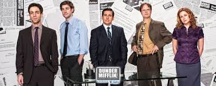
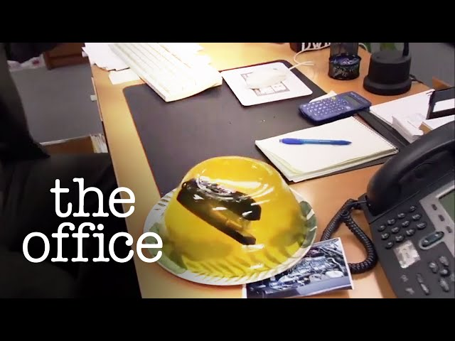
Los personajes antes y despues!!
Nombre
Antes
Despues
Michel Scott
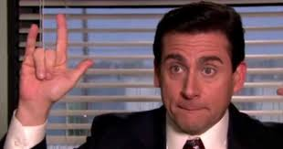
Jim Halpert
Dwight Schrute
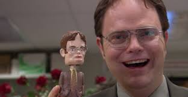
Pam Beesley
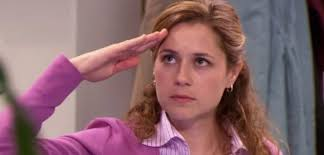
Ryan Howard
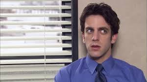
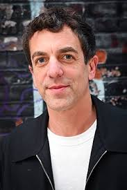
Phyllis Vance
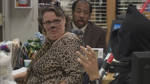
Andy Bernard
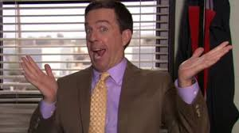
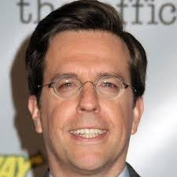
Oscar Maetinez
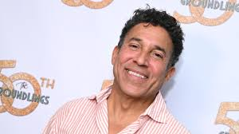
!Una recopilacion de las Mejores fraces en the Office¡
Michel Scott
"A veces empiezo una frase y ni siquiera sé a dónde voy. Espero encontrar algo en el camino"
"El peligro real es cuando te atrapan."
"Nunca subestimes el poder de la procrastinación."
"Eso es lo que ella dijo."
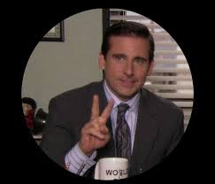
Dwight Schrute
"¿Es ignorancia o apatía? No lo sé y, francamente, no me importa."
"Antes de hacer algo, me pregunto: '¿Un idiota haría eso?' Y si la respuesta es sí, no lo hago."
"Siempre estoy preparado."
"En la naturaleza, solo tienes que sobrevivir. Eso es todo lo que la Madre Naturaleza quiere."
"Si un cuerpo tiene cabeza, estás obligado a darle primeros auxilios."
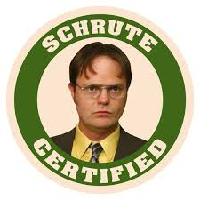
Jim Halpert
"Bromeo con la gente. ¿Qué más hay?"
"La oficina es un lugar donde los sueños van a morir."
"Necesito nuevas bromas. Estoy usando las mismas desde hace años."
"No estoy enamorado de Pam... Estoy enamorado de ella hoy."
"Todo lo que necesito es wifi."
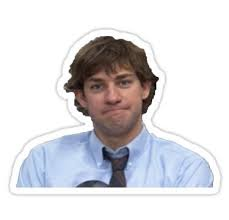
Pam Beesly
"No soy una gran fan de la oficina, pero me gusta la gente con la que trabajo."
"Hay belleza en las cosas ordinarias. ¿No es eso un poco el punto?"
"Nunca pensé que me gustaría tanto trabajar aquí."
"A veces creo que la gente no se da cuenta de lo que tiene hasta que lo pierde."
"Creo que hoy es un buen día para casarse."
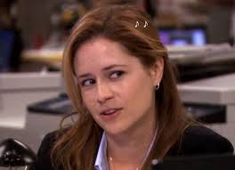
Andy Bernard
"Me gusta ser el tipo al que recurren."
"Soy un gran fan de la oficina. Me encanta venir aquí todos los días."
"¡Ridi-di-di-doo!"
"Soy un Nard Dog."
"¡Es hora de ir a casa!"
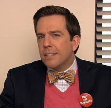
Angela Martin
"Dios odia a los cobardes."
"No creo que reír sea apropiado en el lugar de trabajo."

 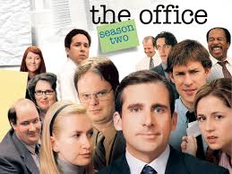
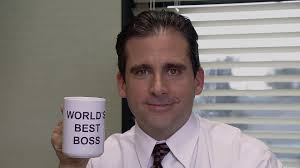
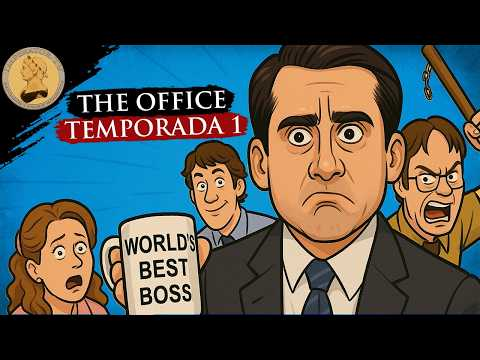
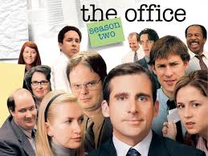
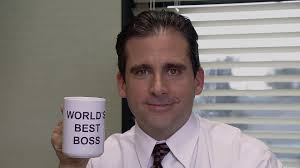
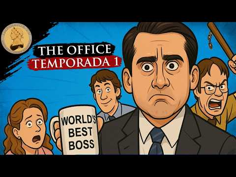